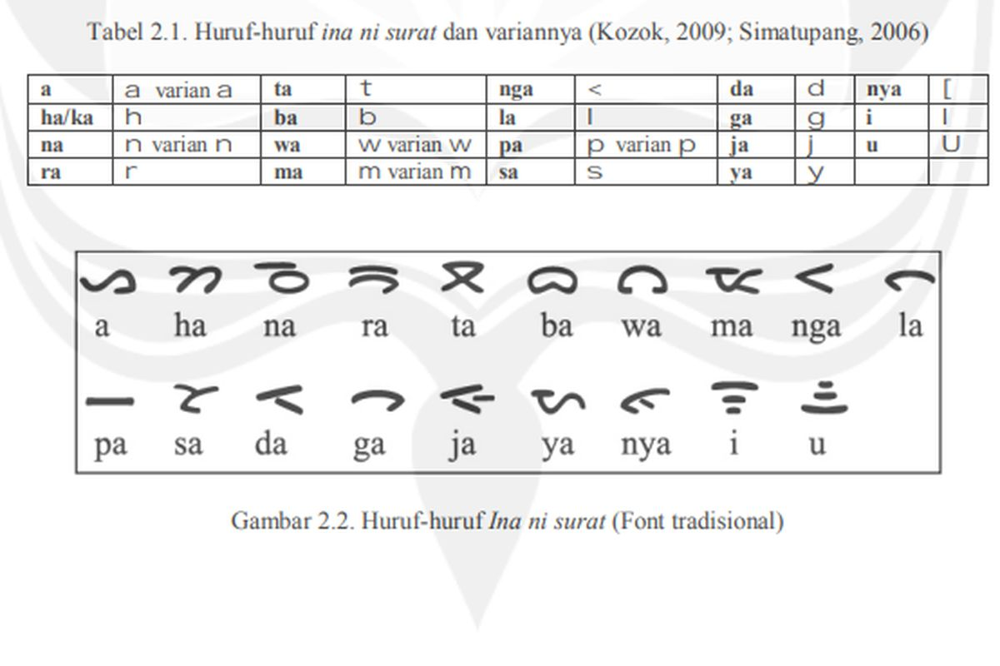

Galeri Budaya Medan
Alat Musik
Pangora, alat musik tradisional Batak yang berbunyi 'pok'.

Aksara Batak
Aksara Batak merupakan warisan tulisan kuno yang kaya budaya.
Rumah Adat
Rumah Bolon, rumah adat Simalungun, simbol budaya Batak Toba dan Simalungun.
Pakaian Adat
Pakaian adat Mandailing menggunakan kain ulos dan aksesoris khas seperti bulang.

Tarian Adat
Tari Tor-Tor dikenal dengan hentakan kaki di atas papan rumah adat Batak.

Senjata Tradisional
Piso Halasan, senjata khas Tapanuli Utara yang dibuat dari tanduk rusa.

Karya Seni
Ulos adalah kain tenun tradisional Batak yang sarat makna simbolis.